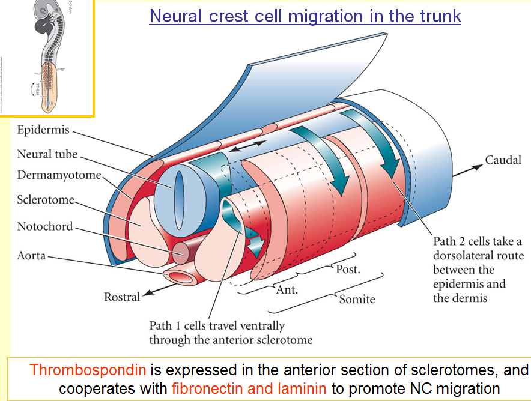
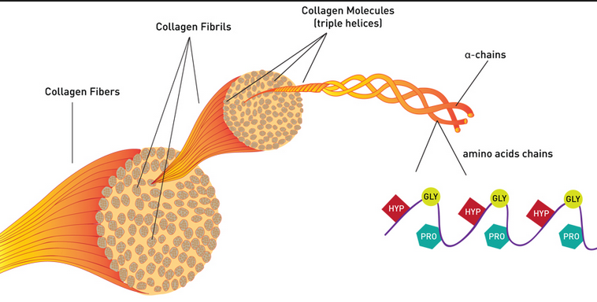
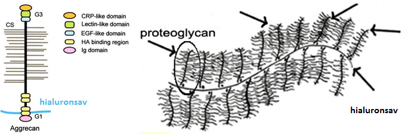
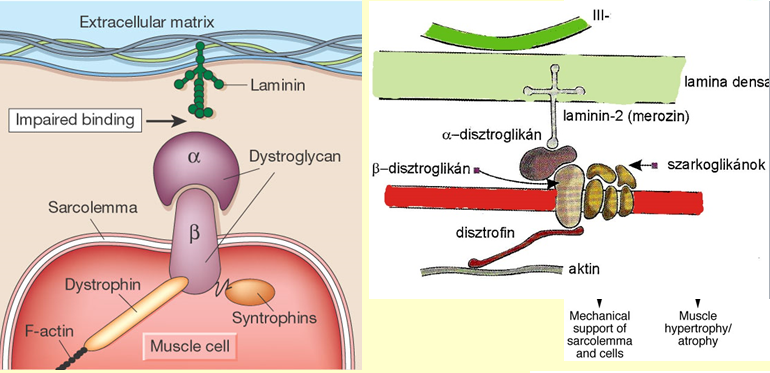
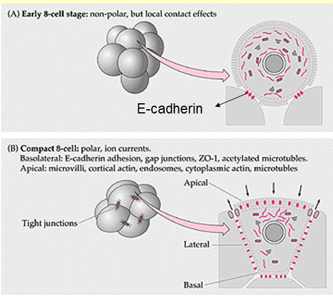
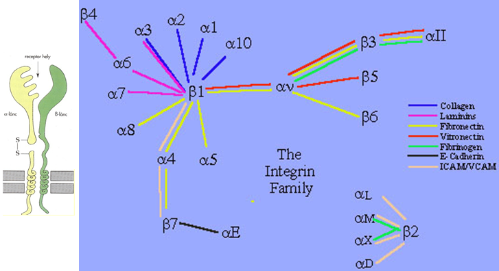
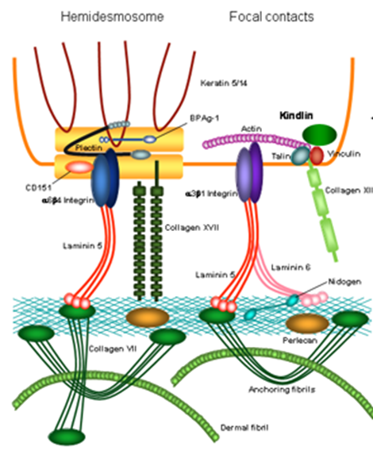

{kind=link}
{kind=link}
{kind=link}
{kind=link}
{kind=link}
{kind=link}
{kind=link}
{kind=link}
{kind=link}
{kind=link}
{kind=link}
{kind=link}
{kind=link}
{kind=link}
{kind=link}
{kind=link}
{kind=link}
{kind=link}
{kind=link}
{kind=link}
6. Sejt-sejt kölcsönhatások, extracelluláris mátrix és integrinek az embrióban








☯ECM már van embrióban is (legelejétől eltekintve)
☯ECM általános funkciói pl. szövetek határait meghatározza, GF-eket tárol és biztosít sejtek számára
☯ECM a fejlődési stádiumtól függően különböző hatással lehet a sejtekre is: proliferáció, differenciálódás, apoptózis irányába "terelheti"
☯ECM-t az alábbi molekulák építik fel: (1)proteogilánok, (2)hyaluronsav, (3)kollagének, (4)elasztin, (5)glikoproteinek
Alapállolámányát az (1)-(2) alkotja, a többi ebbe van beágyzódva
☯Főbb glikoproteinek a laminin,fibronektin,thrombospondin
Neurolatio során pl. a thrombospondin a laminin és fibronektinnel kooperálva engedélyezi a crista_neuralis-sejtek migrációját a sclerotom anterior részén át
☯Fogbimbó fejlődésnél a szindekán és tenaszcin nevű proteoglikénoknak van fontos szerepe
☯Nefron fejlődésnél megfigyelhető, hogy az eleinte mesenchyma-sejtek átalakulnak hámsejtekké. A sejtek eleinte kollagén 1/3-at epressszálnak majd laminint/kollagén 4 (tehát változik a fejlődés során)
A sejtek eleinte kollagén 1/3-at epressszálnak majd laminint/kollagén 4 (tehát változik a fejlődés során)
☯Emlőmirigy sejtek fejlődése a membrana_basalistól függ
Ha elválasztom az emlőmirigysejteket a membrana_basalistól ➜ sejtosztódó gének aktivak, "anyatej"-szintetizáló gének inaktivak (pl. laktoferrin)
Ha ismét a membrana_basalishoz teszem ➜ sejtosztódó gének inaktivak, "anyatej"-szintetizáló gének aktivak (pl. laktoferrin)
☯Proteoglikánok felépítése: 1fehérje-szál és hozzá kovalens-kötéssel kapcsolódva legalább 1db glükózaminoglikán-oldallánc
Fontos proteoglikán pl. aggrekán, mely porcokban (és perineurális nedvben is van) fordul elő, ahol hyaluronsavhoz kapcsolódva nagy vízmegkötőképességű
Ezért rugalmas és egyben szilárd a porc
☯Fibronektin már gasztruláció során megjelenik az ECM-ben
Szerkezete "V-alakú",(diszulfid-híd) és kötőszöveti vagy sejtes elemhez tud kötődni a két végével
Ezáltal 2ECM elemet köt össze vagy 1ECM-1sejt elemmel
☯lamina_basalis főbb alkotói a lamininek, kollagén IV
Két rétege lamina densa és lamina rara.
2 kollagén IV egymáson tekeredve létrehoz 1 "rácskeritést", ez adja a vázat
Lamina densa amit a kollagén IV alkot (rácskerités oldalról)
Lamina rara-ban lévő lamininek kapcsolják lamina_densat a sejthez
Lamina densa-t fibronektin kapcsolja a lamina_fibroreticularishoz
membrana basalis a lamina_fibroreticlaris és lamina basalis együtt
laminin(✝) megjelenik már gastrulatio-nál
lamina basalis a hámsejtek alatt van illetve az alábbiak körül ➜ zsirsejt, simaizomsejt, Schwann-sejt, harántcsikolt-izomsejt
☯muszkuláris disztrófia oka, a disztrofint kódoló gén hibája
Disztrofin részt vesz a harántcsikolt izomsejt lamina_basalishoz kötésében
Következtében az izomösszehúdást a lamina_basalis alig követi, amihez pedig az in kapcsolódik
Páciensek fiatalon meghalnak légzési elégtelenségben (gyógyithatatlan)
X-kromoszómához kötötten recessziven öröklődik
☯Sejtadhéziós molekulák: Ig-szerűek, kadherinek, integrinek, szelektinek, proteoglikánok
Proteoglikánok és integrinek SAM-ok. Kadherinek, szelektinek, Ig-szerű molekulák pedig CAM-ok.
☯Kadherinek (Ca2+ függőek) a zonula_adherens alkotói.
(blastula előtti) morula stádiumnál a blastula képződés első lépése a kompaktizáció
kompaktizáció lényege, hogy a morula "kidudoródó szedercsírából" lesimult felszín lesz
ezt a sejtek lateralis felszínén az E-kadherinekkel létrejövő zonula_adherensekkel való egymáshoz kapcsolódásuk eredményezik
☯Integrinek transzmembrán heterodimer fehérjék.
Heterodimer, ugyanis két különböző (α,β) alegységből épülnek fel.
α-alegység 2 részből áll, melyet diszulfid-híd köt össze
α-alegységnek és β-alegységnek vannak különböző típusai (α1,α2 stb. β-nál ugyanez)
Attól függően, hogy milyen 2fajta alegység kapcsolódik (pl. α2-β3), attól függ, hogy az ECM mely alkotójához fog kötődni (fibronektin, laminin, kollagén stb.)
☯Integrinek az intracelluláris részen a citoszkeletonhoz✽ vagy a sejten belüli jelátvivő folyamatokhoz képesek csatlakozni
Utóbbi következtében az integrinhez kinntről kötődő molekula, be tud indítani jelátviteli-kaszkádokat, és ezzel képes befolyásolni pl. transzkripciót
☯Integrinek alkotják a hámsejtek bazális felszínén lévő hemidezmoszómát, melyek ezáltal a lamina_basalishoz kötik a hámsejtet
Ez esetben intermedier_filamentumhoz kötődik intracellulárisan
☯Integrinek nem hámsejtek esetében, hanem pl. fibrocitáknál, osteoblastoknál, Fokális Adhéziós Komplexet alkotnak
Ez esetben β-alegységgel kapcsolódik a mikrofilamentumhoz(aktin) intracellulárisan
Funkciója, hogy a sejtezáltal képes vándorolni a mátrixon
☯Integrineknek tehát fontos szerepe van a sejtmigrációban, az ECM-hez kötésben, és a transzkripció szabályozásában (ECM által)
{kind=link}
{kind=link}
{kind=link}
{kind=link}
{kind=link}
{kind=link}
{kind=link}